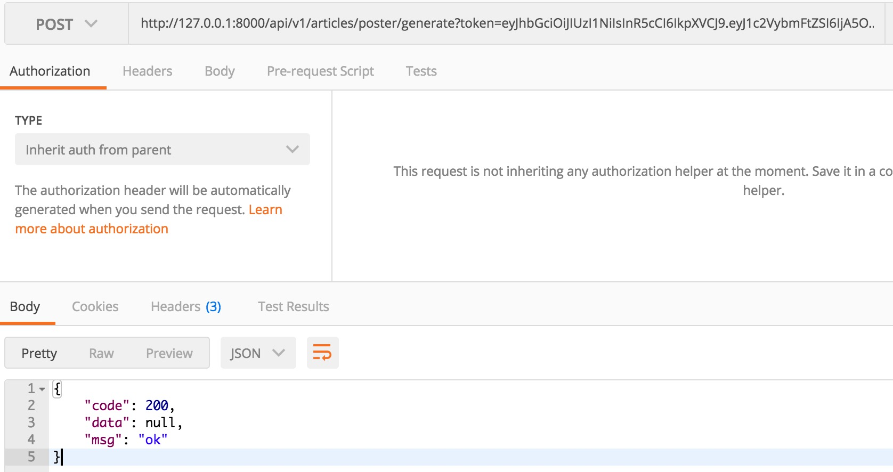
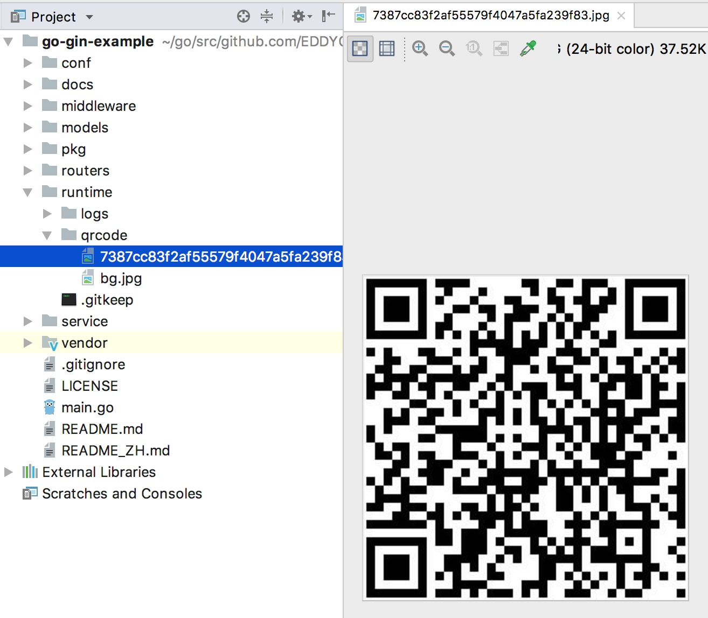
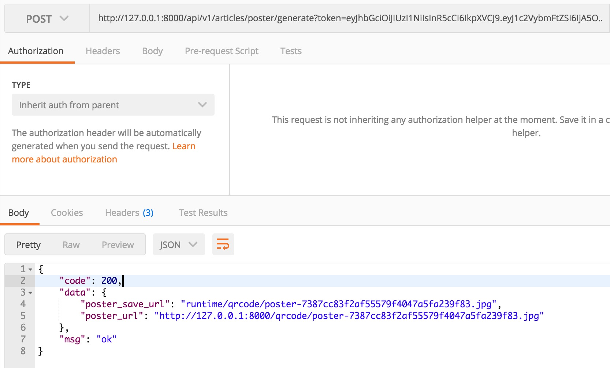
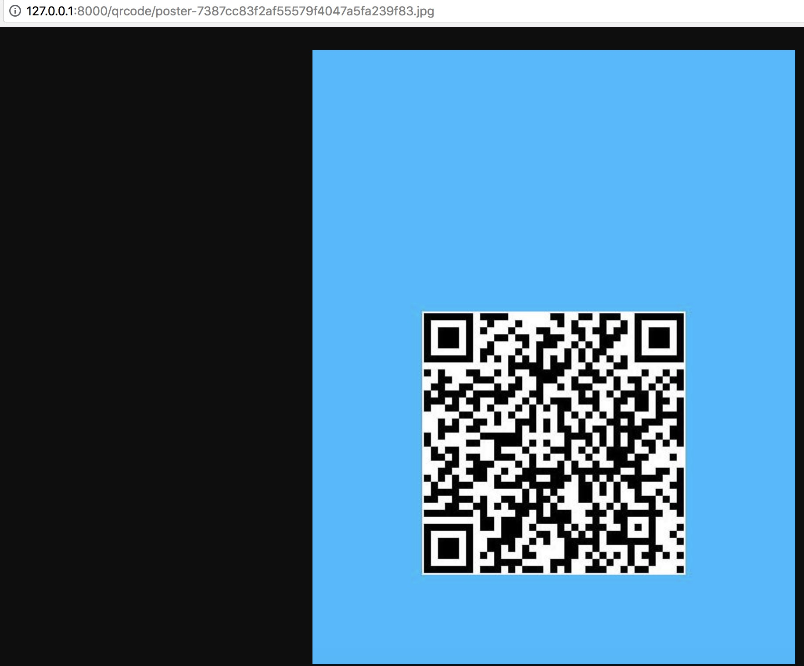

3.15 生成二維碼、合併海報
專案地址：https://github.com/EDDYCJY/go-gin-example
知識點
- 圖片生成
- 二維碼生成
本文目標
在文章的詳情頁中，我們常常會需要去宣傳它，而目前最常見的就是發海報了，今天我們將實作如下功能：
- 生成二維碼
- 合併海報（背景圖 + 二維碼）
實作
首先，你需要在 App 設定項中增加二維碼及其海報的儲存路徑，我們約定設定項名稱為 QrCodeSavePath，值為 qrcode/，經過多節連載的你應該能夠完成，若有不懂可參照 go-gin-example。
生成二維碼
安裝
$ go get -u github.com/boombuler/barcode
工具包
考慮生成二維碼這一動作貼合工具包的定義，且有公用的可能性，新建 pkg/qrcode/qrcode.go 檔案，寫入內容：
package qrcode
import (
"image/jpeg"
"github.com/boombuler/barcode"
"github.com/boombuler/barcode/qr"
"github.com/EDDYCJY/go-gin-example/pkg/file"
"github.com/EDDYCJY/go-gin-example/pkg/setting"
"github.com/EDDYCJY/go-gin-example/pkg/util"
)
type QrCode struct {
URL string
Width int
Height int
Ext string
Level qr.ErrorCorrectionLevel
Mode qr.Encoding
}
const (
EXT_JPG = ".jpg"
)
func NewQrCode(url string, width, height int, level qr.ErrorCorrectionLevel, mode qr.Encoding) *QrCode {
return &QrCode{
URL: url,
Width: width,
Height: height,
Level: level,
Mode: mode,
Ext: EXT_JPG,
}
}
func GetQrCodePath() string {
return setting.AppSetting.QrCodeSavePath
}
func GetQrCodeFullPath() string {
return setting.AppSetting.RuntimeRootPath + setting.AppSetting.QrCodeSavePath
}
func GetQrCodeFullUrl(name string) string {
return setting.AppSetting.PrefixUrl + "/" + GetQrCodePath() + name
}
func GetQrCodeFileName(value string) string {
return util.EncodeMD5(value)
}
func (q *QrCode) GetQrCodeExt() string {
return q.Ext
}
func (q *QrCode) CheckEncode(path string) bool {
src := path + GetQrCodeFileName(q.URL) + q.GetQrCodeExt()
if file.CheckNotExist(src) == true {
return false
}
return true
}
func (q *QrCode) Encode(path string) (string, string, error) {
name := GetQrCodeFileName(q.URL) + q.GetQrCodeExt()
src := path + name
if file.CheckNotExist(src) == true {
code, err := qr.Encode(q.URL, q.Level, q.Mode)
if err != nil {
return "", "", err
}
code, err = barcode.Scale(code, q.Width, q.Height)
if err != nil {
return "", "", err
}
f, err := file.MustOpen(name, path)
if err != nil {
return "", "", err
}
defer f.Close()
err = jpeg.Encode(f, code, nil)
if err != nil {
return "", "", err
}
}
return name, path, nil
}
這裡主要聚焦 func (q *QrCode) Encode 方法，做了如下事情：
- 取得二維碼生成路徑
- 建立二維碼
- 縮放二維碼到指定大小
- 新建存放二維碼圖片的檔案
- 將影象（二維碼）以 JPEG 4：2：0 基線格式寫入檔案
另外在 jpeg.Encode(f, code, nil) 中，第三個引數可設定其影象質量，預設值為 75
// DefaultQuality is the default quality encoding parameter.
const DefaultQuality = 75
// Options are the encoding parameters.
// Quality ranges from 1 to 100 inclusive, higher is better.
type Options struct {
Quality int
}
路由方法
1、第一步
在 routers/api/v1/article.go 新增 GenerateArticlePoster 方法用於介面開發
2、第二步
在 routers/router.go 的 apiv1 中新增 apiv1.POST("/articles/poster/generate", v1.GenerateArticlePoster) 路由
3、第三步
修改 GenerateArticlePoster 方法，編寫對應的生成邏輯，如下：
const (
QRCODE_URL = "https://github.com/EDDYCJY/blog#gin%E7%B3%BB%E5%88%97%E7%9B%AE%E5%BD%95"
)
func GenerateArticlePoster(c *gin.Context) {
appG := app.Gin{c}
qrc := qrcode.NewQrCode(QRCODE_URL, 300, 300, qr.M, qr.Auto)
path := qrcode.GetQrCodeFullPath()
_, _, err := qrc.Encode(path)
if err != nil {
appG.Response(http.StatusOK, e.ERROR, nil)
return
}
appG.Response(http.StatusOK, e.SUCCESS, nil)
}
驗證
透過 POST 方法訪問 http://127.0.0.1:8000/api/v1/articles/poster/generate?token=$token（注意 $token）

透過檢查兩個點確定功能是否正常，如下：
1、訪問結果是否 200
2、本地目錄是否成功生成二維碼圖片

合併海報
在這一節，將實作二維碼圖片與背景圖合併成新的一張圖，可用於常見的宣傳海報等業務場景
背景圖
將背景圖另存為 runtime/qrcode/bg.jpg（實際應用，可存在 OSS 或其他地方）
service 方法
開啟 service/article_service 目錄，新建 article_poster.go 檔案，寫入內容：
package article_service
import (
"image"
"image/draw"
"image/jpeg"
"os"
"github.com/EDDYCJY/go-gin-example/pkg/file"
"github.com/EDDYCJY/go-gin-example/pkg/qrcode"
)
type ArticlePoster struct {
PosterName string
*Article
Qr *qrcode.QrCode
}
func NewArticlePoster(posterName string, article *Article, qr *qrcode.QrCode) *ArticlePoster {
return &ArticlePoster{
PosterName: posterName,
Article: article,
Qr: qr,
}
}
func GetPosterFlag() string {
return "poster"
}
func (a *ArticlePoster) CheckMergedImage(path string) bool {
if file.CheckNotExist(path+a.PosterName) == true {
return false
}
return true
}
func (a *ArticlePoster) OpenMergedImage(path string) (*os.File, error) {
f, err := file.MustOpen(a.PosterName, path)
if err != nil {
return nil, err
}
return f, nil
}
type ArticlePosterBg struct {
Name string
*ArticlePoster
*Rect
*Pt
}
type Rect struct {
Name string
X0 int
Y0 int
X1 int
Y1 int
}
type Pt struct {
X int
Y int
}
func NewArticlePosterBg(name string, ap *ArticlePoster, rect *Rect, pt *Pt) *ArticlePosterBg {
return &ArticlePosterBg{
Name: name,
ArticlePoster: ap,
Rect: rect,
Pt: pt,
}
}
func (a *ArticlePosterBg) Generate() (string, string, error) {
fullPath := qrcode.GetQrCodeFullPath()
fileName, path, err := a.Qr.Encode(fullPath)
if err != nil {
return "", "", err
}
if !a.CheckMergedImage(path) {
mergedF, err := a.OpenMergedImage(path)
if err != nil {
return "", "", err
}
defer mergedF.Close()
bgF, err := file.MustOpen(a.Name, path)
if err != nil {
return "", "", err
}
defer bgF.Close()
qrF, err := file.MustOpen(fileName, path)
if err != nil {
return "", "", err
}
defer qrF.Close()
bgImage, err := jpeg.Decode(bgF)
if err != nil {
return "", "", err
}
qrImage, err := jpeg.Decode(qrF)
if err != nil {
return "", "", err
}
jpg := image.NewRGBA(image.Rect(a.Rect.X0, a.Rect.Y0, a.Rect.X1, a.Rect.Y1))
draw.Draw(jpg, jpg.Bounds(), bgImage, bgImage.Bounds().Min, draw.Over)
draw.Draw(jpg, jpg.Bounds(), qrImage, qrImage.Bounds().Min.Sub(image.Pt(a.Pt.X, a.Pt.Y)), draw.Over)
jpeg.Encode(mergedF, jpg, nil)
}
return fileName, path, nil
}
這裡重點留意 func (a *ArticlePosterBg) Generate() 方法，做了如下事情：
- 取得二維碼儲存路徑
- 生成二維碼影象
- 檢查合併後圖像（指的是存放合併後的海報）是否存在
- 若不存在，則生成待合併的影象 mergedF
- 開啟事先存放的背景圖 bgF
- 開啟生成的二維碼影象 qrF
- 解碼 bgF 和 qrF 返回 image.Image
- 建立一個新的 RGBA 影象
- 在 RGBA 影象上繪製 背景圖（bgF）
- 在已繪製背景圖的 RGBA 影象上，在指定 Point 上繪製二維碼影象（qrF）
- 將繪製好的 RGBA 影象以 JPEG 4：2：0 基線格式寫入合併後的影象檔案（mergedF）
錯誤碼
路由方法
開啟 routers/api/v1/article.go 檔案，修改 GenerateArticlePoster 方法，編寫最終的業務邏輯（含生成二維碼及合併海報），如下：
const (
QRCODE_URL = "https://github.com/EDDYCJY/blog#gin%E7%B3%BB%E5%88%97%E7%9B%AE%E5%BD%95"
)
func GenerateArticlePoster(c *gin.Context) {
appG := app.Gin{c}
article := &article_service.Article{}
qr := qrcode.NewQrCode(QRCODE_URL, 300, 300, qr.M, qr.Auto) // 目前写死 gin 系列路径，可自行增加业务逻辑
posterName := article_service.GetPosterFlag() + "-" + qrcode.GetQrCodeFileName(qr.URL) + qr.GetQrCodeExt()
articlePoster := article_service.NewArticlePoster(posterName, article, qr)
articlePosterBgService := article_service.NewArticlePosterBg(
"bg.jpg",
articlePoster,
&article_service.Rect{
X0: 0,
Y0: 0,
X1: 550,
Y1: 700,
},
&article_service.Pt{
X: 125,
Y: 298,
},
)
_, filePath, err := articlePosterBgService.Generate()
if err != nil {
appG.Response(http.StatusOK, e.ERROR_GEN_ARTICLE_POSTER_FAIL, nil)
return
}
appG.Response(http.StatusOK, e.SUCCESS, map[string]string{
"poster_url": qrcode.GetQrCodeFullUrl(posterName),
"poster_save_url": filePath + posterName,
})
}
這塊涉及到大量知識，強烈建議閱讀下，如下：
其所涉及、關聯的庫都建議研究一下
StaticFS
在 routers/router.go 檔案，增加如下程式碼:
r.StaticFS("/qrcode", http.Dir(qrcode.GetQrCodeFullPath()))
驗證

訪問完整的 URL 路徑，返回合成後的海報並掃除二維碼成功則正確 🤓

總結
在本章節實作了兩個很常見的業務功能，分別是生成二維碼和合並海報。希望你能夠仔細閱讀我給出的連結，這塊的知識量不少，想要用好影象處理的功能，必須理解對應的思路，舉一反三
最後希望對你有所幫助 👌
參考
本系列示例程式碼
關於
修改記錄
- 第一版：2018年02月16日釋出文章
- 第二版：2019年10月02日修改文章
？
如果有任何疑問或錯誤，歡迎在 issues 進行提問或給予修正意見，如果喜歡或對你有所幫助，歡迎 Star，對作者是一種鼓勵和推進。
我的微信公眾號